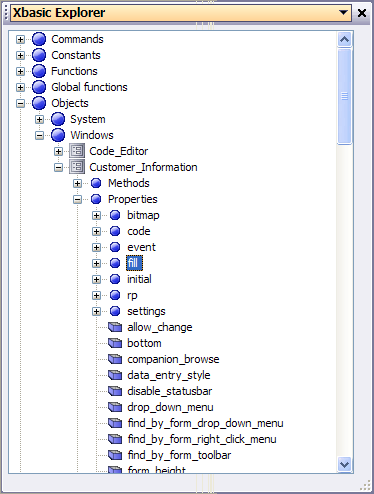

Using the Xbasic Explorer to View Object Properties
To determine the list of properties associated with an object, use the Xbasic Explorer. To display the Xbasic Explorer, select View > Code editor from the Control Panel menu.
For example, if you have a form called Customer, navigate in the Xbasic Explorer to Objects > Windows > Customer > Properties to see a list of the properties associated with the form (as shown below):

To view the current value of an object property, drag the property from the Xbasic Explorer and drop it into the Interactive Window of the Code Editor. Alpha Five will insert the object address followed by the property name into the window. Type a "? " in front of the statement and press Enter. Alpha Five will report the current value of the property.
For example, you could drag the "window_title" property into the Interactive window to find out the window title for the Customer form:
|
? :customer.window_title |